Robotics MS student at Northeastern with a three-year background as a Mechanical Project Engineer. I bring dual expertise to automation: strong foundations in thermal systems and structural simulation, applied to designing, programming and physically optimizing intelligent robotic systems.
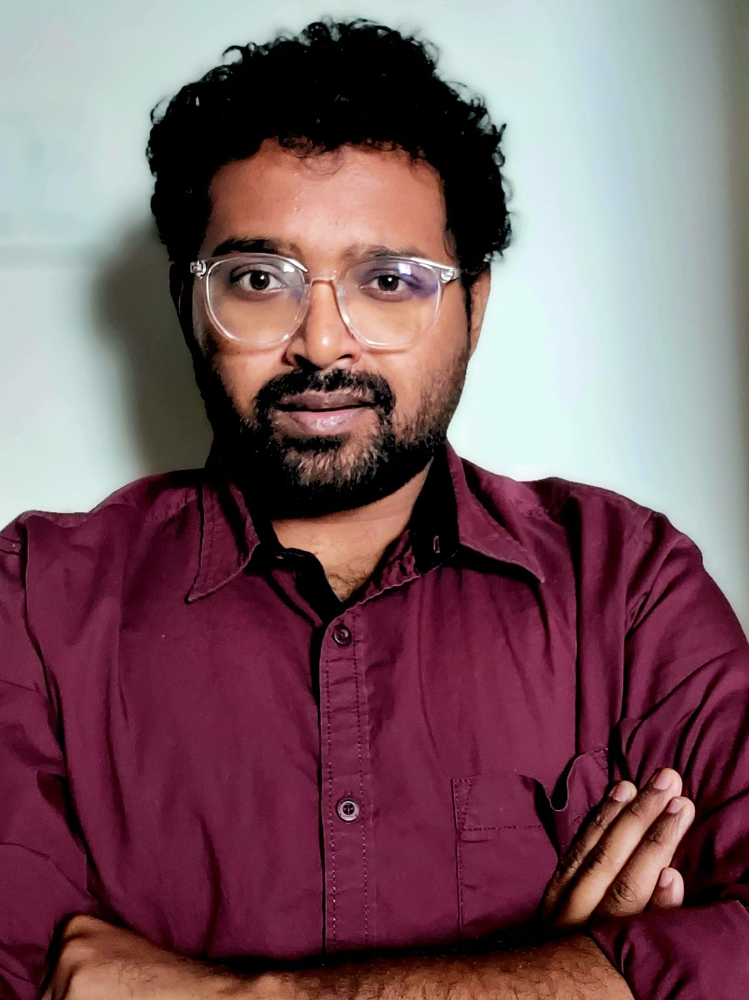
I'm currently pursuing my MS in Robotics at Northeastern University. My work right now covers multi-robot coordination, vision-based manipulation and ROS2 simulation, alongside prototyping and mechanical design, including a thermal controls project for the ISS in collaboration with JAXA.
I did my undergrad in Mechanical Engineering at NIT Rourkela, which is where most of my thermal simulation and structural analysis work comes from, and carried some of it into three years as a Project Engineer at Thermax alongside design, planning and manufacturing coordination. That mix of simulation and hardware is what I bring into robotics. It helps to know how a machine actually holds up physically, not just how the software runs.
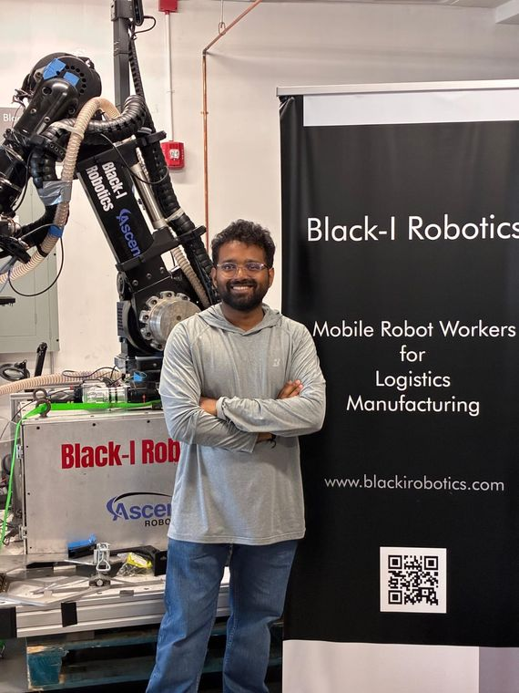
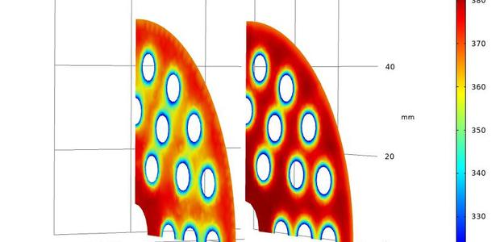
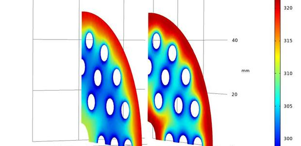
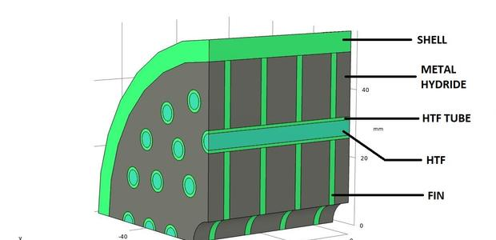
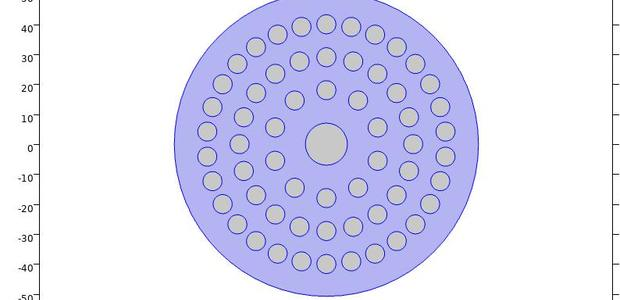
Hover to preview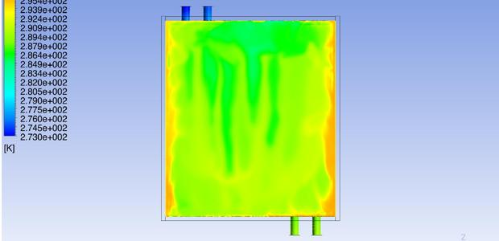
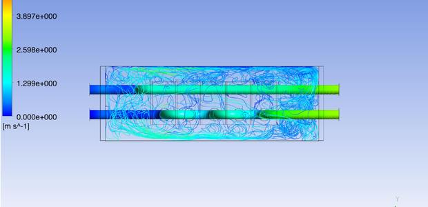
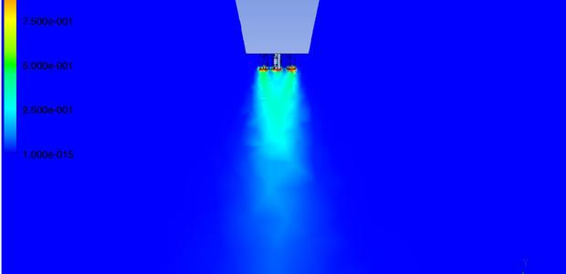
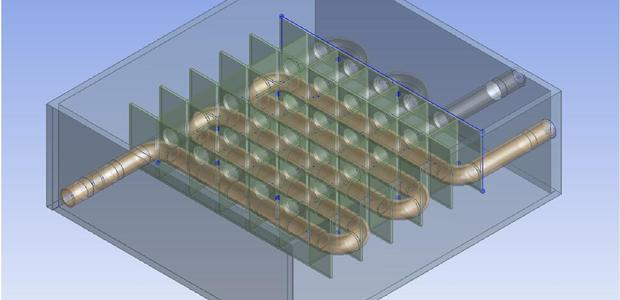
Hover to preview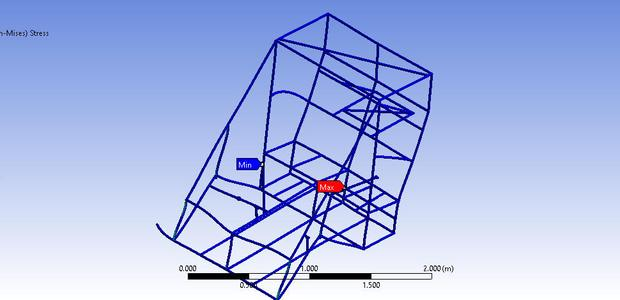
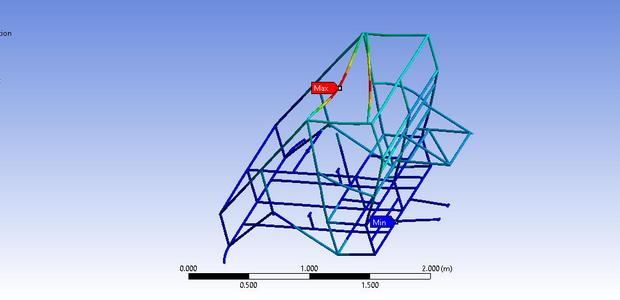
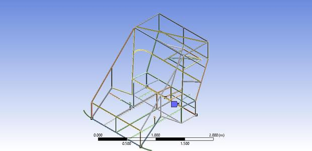
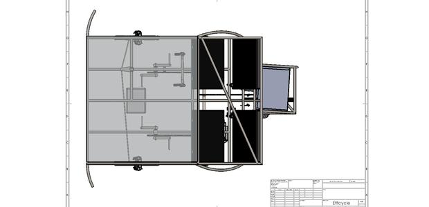
Hover to previewLooking for full-time roles where I can take real ownership and my work visibly moves the product forward. If you're solving something difficult, I'd like to hear about it.